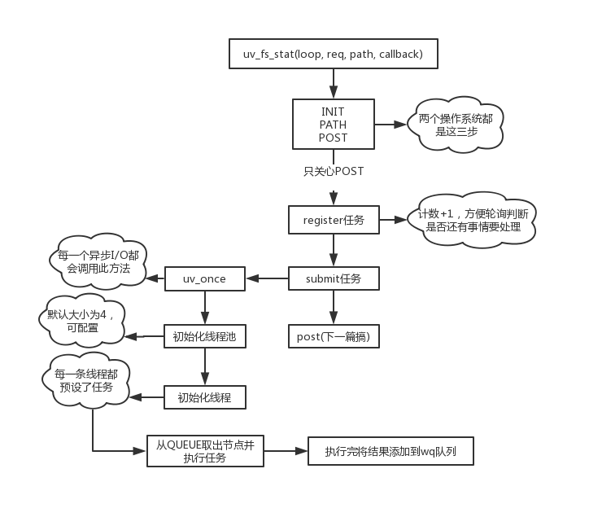

好像博客有观众，那每一篇都画个图吧！
本节简图如下。

上一篇其实啥也没讲，不过node本身就是这么复杂，走流程就要走全套。就像曾经看webpack源码，读了300行代码最后就为了取package.json里面的main属性，导致我直接弃坑了，垃圾源码看完对脑子没一点好处。回头看了我之前那篇博客，同步那块讲的还像回事，异步就惨不忍睹了。不过讲道理，异步中涉及锁、底层操作系统API(iocp)的部分我到现在也不太懂，毕竟没有实际的多线程开发经验，只是纯粹的技术爱好者。
这一篇再次进入libuv内部，从uv_fs_stat开始，操作系统以windows为准，方法源码如下。
// 参数分别为事件轮询对象loop、管理事件处理的对象req、路径path、事件回调cb
int uv_fs_stat(uv_loop_t* loop, uv_fs_t* req, const char* path, uv_fs_cb cb) {
int err;
INIT(UV_FS_STAT);
err = fs__capture_path(req, path, NULL, cb != NULL);
if (err) {
return uv_translate_sys_error(err);
}
POST;
}其实Unix版本的代码更简洁，直接就是
int uv_fs_stat(uv_loop_t* loop, uv_fs_t* req, const char* path, uv_fs_cb cb) {
INIT(STAT);
PATH;
POST;
}问题不大，都是三步。
前面两步在那篇都有介绍，这里就不重复了。大概就是根据操作类型初始化req对象，然后处理一下路径，分配合理的空间给path字符串这些。
重点还是放在POST宏。
#define POST \
do { \
if (cb != NULL) { \
uv__req_register(loop, req); \
// word_req是一个类型为uv__work的结构体
// UV__WORK_FAST_IO是I/O操作类型
// uv__fs_work是一个函数
// uv__fs_done也是一个函数
uv__work_submit(loop, \
&req->work_req, \
UV__WORK_FAST_IO, \
uv__fs_work, \
uv__fs_done); \
return 0; \
} else { \
uv__fs_work(&req->work_req); \
return req->result; \
} \
} \
while (0)由于只关注异步操作，所以看if分支。参数已经在注释中给出，还需要注意的一个点是方法名，register、submit，即注册、提交。意思是，异步操作中，在这里也不是执行I/O的地点，实际上还有更深入的地方，继续往后面看。
uv__req_register这个就不看了，简单讲是把loop的active_handle++，每一轮轮询结束后会检测当前loop是否还有活跃的handle需要处理，有就会继续跑，判断标准就是active_handle数量是否大于0。
直接看下一步uv__work_submit。
// uv__word结构体
struct uv__work {
void (*work)(struct uv__work *w);
void (*done)(struct uv__work *w, int status);
struct uv_loop_s* loop;
void* wq[2];
};
// 参数参考上面 init_once是一个方法
void uv__work_submit(uv_loop_t* loop,
struct uv__work* w,
enum uv__work_kind kind,
void (*work)(struct uv__work* w),
void (*done)(struct uv__work* w, int status)) {
uv_once(&once, init_once);
w->loop = loop;
w->work = work;
w->done = done;
post(&w->wq, kind);
}又是两部曲，第一个uv_once如其名，这个方法只会执行一次，然后将loop对象和两个方法挂在前面req的uv__work结构体上，最后调用post。
uv_once这个方法有点意思，本身跟stat操作本身毫无关系，只是对所有I/O操作做一个准备工作，所有的I/O操作都会预先调一下这个方法。windows、Unix系统的处理方式完全不同，这里贴一贴代码，Unix不想看也看不懂，搞搞windows系统的。
void uv_once(uv_once_t* guard, void (*callback)(void)) {
// 调用过方法此处ran为1 直接返回
if (guard->ran) {
return;
}
uv__once_inner(guard, callback);
}
static void uv__once_inner(uv_once_t* guard, void (*callback)(void)) {
DWORD result;
HANDLE existing_event, created_event;
// 创建或打开命名或未命名的事件对象
created_event = CreateEvent(NULL, 1, 0, NULL);
if (created_event == 0) {
uv_fatal_error(GetLastError(), "CreateEvent");
}
// 对&guard->event与NULL做原子比较 如果相等则将created_event赋予&guard->event
// 返回第一个参数的初始值
existing_event = InterlockedCompareExchangePointer(&guard->event,
created_event,
NULL);
// 如果第一个参数初始值为NULL 说明该线程抢到了方法第一次执行权利
if (existing_event == NULL) {
/* We won the race */
callback();
result = SetEvent(created_event);
assert(result);
guard->ran = 1;
} else {
// ...
}
}分块来解释一下上面的函数吧。
最后，所有的代码流向都为了执行callback，参数表明这是一个函数指针，无返回值无参数，叫init_once。
static void init_once(void) {
#ifndef _WIN32
// 用32位系统的去买新电脑
// 略...
#endif
init_threads();
}有意思咯，线程来了。
先表明，libuv中有一个非常关键的数据结构：队列，在src/queue.h。很多地方(比如之前讲轮询的某一阶段取对应的callback时)我虽然说的是链表，但实际上用的是这个，由于链表是队列的超集，而且比较容易理解，总的来说也不算错。说这么多，其实是初始化线程池会用到很多queue的宏，我不想讲，后面会单独开一篇说。
下面上代码。
static void init_threads(void) {
unsigned int i;
const char* val;
uv_sem_t sem;
// 线程池默认大小为4
nthreads = ARRAY_SIZE(default_threads);
// 可以通过环境变量UV_THREADPOOL_SIZE来手动设置
val = getenv("UV_THREADPOOL_SIZE");
// 如果设成0会变成1 大于上限会变成128
if (val != NULL)
nthreads = atoi(val);
if (nthreads == 0)
nthreads = 1;
if (nthreads > MAX_THREADPOOL_SIZE)
nthreads = MAX_THREADPOOL_SIZE;
threads = default_threads;
// 分配空间 静态变量threads负责管理线程
if (nthreads > ARRAY_SIZE(default_threads)) {
threads = uv__malloc(nthreads * sizeof(threads[0]));
if (threads == NULL) {
nthreads = ARRAY_SIZE(default_threads);
threads = default_threads;
}
}
// 这里是锁和QUEUE相关...
// 这里给线程设置任务 唤醒后直接执行worker方法
for (i = 0; i < nthreads; i++)
if (uv_thread_create(threads + i, worker, &sem))
abort();
// 无关代码...
}除去一些不关心的代码，剩下的就是判断是否有手动设置线程池数量，然后初始化分配空间，最后循环给每一个线程分配任务。
这个worker可以先简单看一下，大部分内容都是QUEUE相关，详细内容全部写在注释里面。
static void worker(void* arg) {
// ...
// 这个是给代码块加锁 很多地方都有
uv_mutex_lock(&mutex);
for (;;) {
// ..。
// 从队列取出一个节点
q = QUEUE_HEAD(&wq);
// 表示没有更多要处理的信息 直接退出绝不能继续走下面的
// 退出前还会两个操作 1.唤醒另一个线程再次处理这个方法(可能下一瞬间来活了) 2.去掉锁
if (q == &exit_message) {
uv_cond_signal(&cond);
uv_mutex_unlock(&mutex);
break;
}
// 从队列中移除这个节点
QUEUE_REMOVE(q);
QUEUE_INIT(q);
is_slow_work = 0;
// node过来的都是快速通道 不会走这里
if (q == &run_slow_work_message) {
//...
}
// 由于已经从队列中移除了对应节点 这里可以把锁去掉了
uv_mutex_unlock(&mutex);
// 从节点取出对应的任务 执行work也就是实际的I/O操作(比如fs.stat...) 参考上面的uv__work_submit方法
w = QUEUE_DATA(q, struct uv__work, wq);
w->work(w);
// 这里也需要加锁 执行完节点任务后需要将结果添加到word_queue的队列中
uv_mutex_lock(&w->loop->wq_mutex);
w->work = NULL;
QUEUE_INSERT_TAIL(&w->loop->wq, &w->wq);
uv_async_send(&w->loop->wq_async);
uv_mutex_unlock(&w->loop->wq_mutex);
// 由于是for(;;) 这里加锁纯粹是为了下一次提前准备循环
uv_mutex_lock(&mutex);
if (is_slow_work) {
/* `slow_io_work_running` is protected by `mutex`. */
slow_io_work_running--;
}
}
}注意是静态方法，所以也需要处理多线程问题。注释我写的非常详细了，可以慢慢看，不懂C++也大概能明白流程。
还以为这一篇能搞完，没想到这个流程有点长，先这样吧。